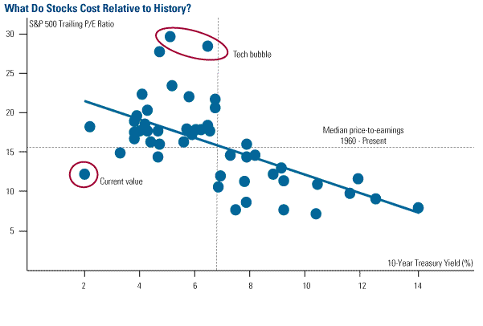

Motivation
Outlier detection is a growing area of research in machine learning with numerous real-world applications (Hodge and Austin. 2004). In astronomy, the detection of outlier light curves is a strategy for systematic discovery of new objects given the massive data that are impossible to analyze by human eye (Nun et al. 2014). In finance, outlier detection is used to identify sudden shocks and help model volatility (Charles and Darne 2006).
Figure M1. In finance, outlier detection can be used to identify time periods of interest. From BCA Research 2011.
In computer science, malware can be identified by simply monitoring outlier system processes (Canzanese et al. 2013) and unusual system usuage, or attacks on servers, can be caught with outlier detection. In banking, outlier detection could be used to identify suspicious activity or fraud (Ferdousi and Maeda 2006). In engineering, outlier detection is applied to manufacturing lines or processes to detect defects or errors (Hodge and Austin. 2004). In biology, outlier detection is used as a test for natural selection (Beaumont and Nichols 1996).

Figure M2. In biology, outlier detection can be used to identify positive selection in bat genes. From Puechmaille et al: microsatellite loci (red arrow indicates CTC1) from bat colonies in Myanmar and Thailand. The outlier (red point) in this plot indicates that that gene locus is undergoing positive selection.
In this project, we use various outlier detection methods to identify outliers in a data set of astonomical light curves. We modify the methods and use a mixture of experts model to determine if any improvement in outlier detection can be obtained. This project builds off of data used in the Nun et al. 2014 paper.